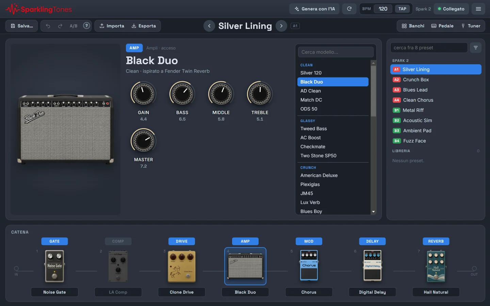
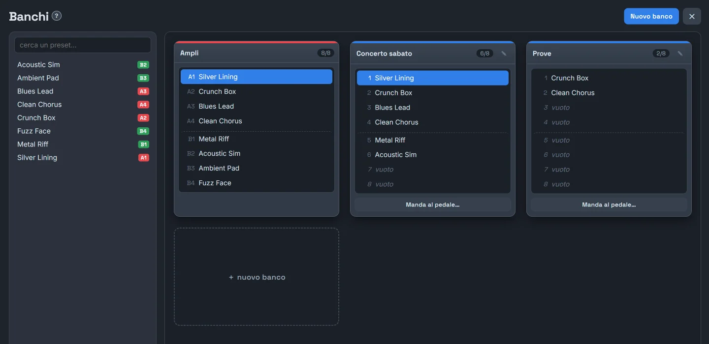
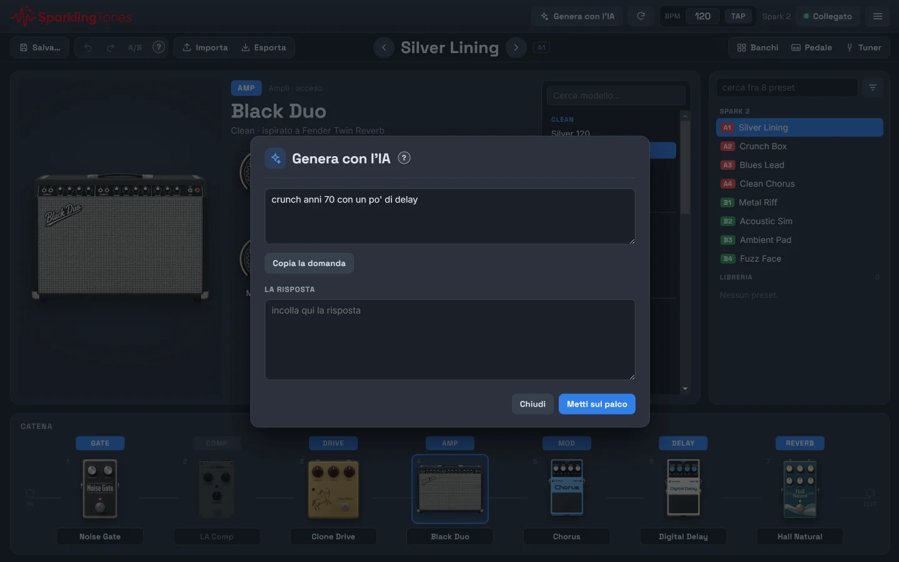
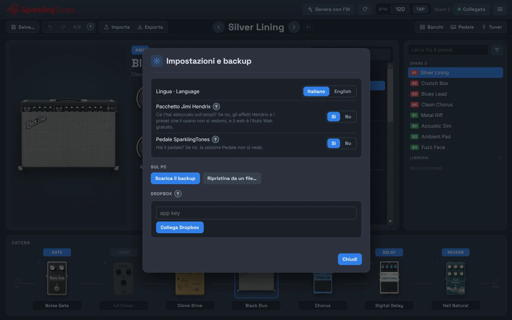
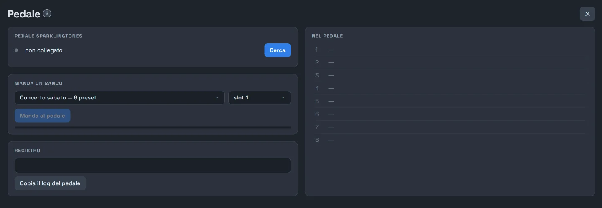

Before you start
Two ways to use it on a computer, with the same features.
In the browser
- Open the computer app in Chrome or Edge: they are the browsers that can talk to Bluetooth. Firefox and Safari can't.
- If you like, install it: browser menu → Install SparklingTones. It opens in its own window, with an icon in the Start menu, and works without a connection too.
The Windows app
- Download
SparklingTones-Setup.exeand open it. - Windows may show «Windows protected your PC»: that's normal for a new program. Click More info → Run anyway.
- Choose the folder and finish the installation: you'll find SparklingTones on the desktop and in the Start menu.
The computer needs Bluetooth. Almost every laptop has it; a desktop often doesn't, and a USB Bluetooth dongle is enough. No accounts and no sign-ups.
Each version has its own library: the browser, the Windows app and the phone don't see each other. To have the same presets everywhere use Dropbox or Export / Import: see Keeping it safe.
Connecting the amp
Once per session; the app remembers everything else.
- Switch on the Spark. Close Positive Grid's official app and the app on your phone: the amp talks to only one device at a time.
- Click Connect at the top right.
- The list of Bluetooth devices opens: choose the Spark.
- The light turns green and the amp's name appears next to it. The eight presets in the slots are read automatically and appear at the top of the library, on the right.
Without the amp the app works anyway: you edit the copies in the library, and hear them when you connect.
The screen
Five areas, from top to bottom.

- The top bar: Generate with AI, the ↻ button that reads back from the amp the sound it's making, the BPM with Tap, the amp's name, Connect and the ☰ menu.
- The second bar: Save…, Undo and Redo, A/B, Import and Export; in the middle the name of the preset on stage, with the ‹ › arrows to go to the previous or next slot; on the right Banks, Pedal and Tuner.
- The stage, in the middle: the picture of the chosen block, its knobs and, on the right, the list of models.
- The library, on the right: first the amp's eight slots (A1–A4 in red, B1–B4 in green), then all your other presets.
- The chain, at the bottom: the seven blocks in the order of the sound, from input to output.
Next to some features there is a small round ?: one click and the explanation opens.
Shaping the sound
With the amp connected, every change is heard right away.

The chain
- Click a block (Gate, Comp, Drive, Amp, Mod, Delay, Reverb): it goes on stage.
- Click the coloured label above the block: switches it on or off. Off is grey.
- Click the name under the block: choose another model.
The knobs
- Drag up or down, or use the wheel. With Shift it's finer.
- Double click: back to the middle.
Changing model
- Choose the block.
- In the list to the right of the stage click the model, or type in Search model….
The model changes straight away, on the amp and on stage.
The tempo: BPM and Tap
Delay, tremolo and the other time-based effects follow the BPM at the top.
- Type the number, or use the ↑ ↓ keys.
- Or click Tap in time, at least twice. After two seconds of pause the count starts over.
Undo, Redo and A/B
- Undo / Redo: back and forward through your changes.
- A/B: hear the preset as it was saved. Press it again to go back to your changes.
Use A/B before saving: you hear whether the tweak really improves the sound.
Saving
Until you save, next to the name it says «modified · not saved».
- Click Save….
- Choose the name and, if you like, one of the amp's eight slots: that's what plays when you press the buttons on the amp, even without the computer.
- If another preset was in that slot, it isn't lost: it leaves the slot and stays in the library.
If you close the window with unsaved changes, the app asks before leaving.
Export saves the preset on stage to a file, to keep or to give to someone.
Import reads a file: a single preset, a whole backup or the official app's
preset_backup.zip.
The library
As many presets as you want, not just the amp's eight.
- Click a preset: it plays and goes on stage. If it's in a slot it changes instantly, otherwise in about a second.
- ⋯ button or right click: its actions (slot, bank, rename, duplicate, family, categories, notes, export, delete).
- Search, at the top: filters by name. The button next to it chooses the order; the filters are below.
Families and categories
- Family: what sound it is (clean, drive, acoustic, bass).
- Categories: the style or the song.
They're managed from ☰ → Categories and families….
Tidying up
- ☰ → Duplicates…: finds identical presets.
- ☰ → Delete all presets…: always spares the amp's eight.
Banks
Groups of eight presets, like a setlist for a gig.

- Click Banks in the second bar, then New bank.
- Drag presets from the library, on the left, into the bank's places.
- A click on a place plays that preset. To change the order of the banks, grab them by the header and move them.
Banks never write to the amp's slots: they live only in the library. The «Amp» bank is something else: it shows the eight presets in the slots and can't be edited here.
Banks are the same as in the phone's Live view (if you keep the libraries in step with Dropbox) and they are what the pedal plays.
Live beta
For playing: your banks on eight big buttons, controlled with the mouse or a MIDI foot controller.
Live is still being tested. If something doesn't work, or your MIDI pedal doesn't respond, write to me from Report a problem in the ☰ menu: every report helps.
Presets and Stomp
- Click Live in the second bar. With ◀ ▶ choose the bank: Amp (the eight slots) or one of your banks.
- In Presets each big button plays its preset: A1–A4 in red, B1–B4 in green.
- In Stomp the buttons switch the blocks of the playing preset on and off: Compressor, Drive, Mod, Delay, Reverb, like pedals on the floor.
Like banks, Live never writes to the amp's slots.
The MIDI foot controller
- Open Foot controller and connect the pedal, by USB cable or Bluetooth. The Spark stays connected.
- Click ＋ Learn a switch and press a switch on the pedal.
- Choose what that switch does in Presets, in Stomp and with a long press.
- Long press: only with pedals that send a CC at 127 on press and at 0 on release. You choose how long, from 1 to 3 seconds.
- Program Change: short press only.
In the Windows app changing preset is faster: about half a second instead of one.
Generate with AI
A new preset from a description, with the chat you already use.

- Click Generate with AI at the top and describe the sound: «70s crunch with a little delay», «the clean tone of a song», «a Santana-style lead».
- Copy the request: a complete request goes to the clipboard, with the list of effects your amp really has.
- Paste it into the chat you use (ChatGPT, Claude, Gemini…), copy the reply and paste it into The reply.
- Put on stage: the preset plays on the amp, not saved yet. Tweak it, and if you like it save it with Save….
The app sends nothing to anyone and asks for no keys or subscriptions: you open the chat yourself. You need at least one preset read from the amp, to start from.
Tuning
The amp's tuner, on the big screen.
Click Tuner and play one string at a time. While the Tuner is open the amp is silent: close it with ✕ and the sound comes back.
Keeping it safe, and taking it elsewhere
It's all in ☰ → Settings and backup.

The backup on the PC
- Download the backup: a
.jsonfile with everything (presets, families, categories, notes, banks). - Restore from a file…: puts it back, on another device too. It asks for confirmation first.
Dropbox
The same library on phone, browser and Windows app, on its own.
- Same preset changed in two places: the most recent change wins.
- The amp's slots don't travel.
- If more than five presets would disappear in one go, it asks first.
The safety backup
- Make a safety backup: sets the library aside on Dropbox, in a file that sync never touches.
- Restore the safety backup: puts it back as it was.
There is only one: a new one replaces the old one.
Connecting Dropbox (once per device)
- On
dropbox.com/developers: Create app → Scoped access → App folder, with any name you like. - In the Permissions tab tick
files.content.writeandfiles.content.read, and save. - In the Settings tab copy the App key (the app secret isn't needed).
- In the app: ☰ → Settings and backup → paste the key → Connect Dropbox.
- Dropbox opens in the browser: authorise, copy the code it shows you, paste it into the app and press Done.
The official app's preset_backup.zip is in Positive Grid's folder on your Dropbox.
Positive Grid has announced the end of that backup in 2027: copy it somewhere of your own while
it's there, and import it here.
The other settings
Also in ☰ → Settings and backup.
Lingua · Language
Italian or English.
Jimi Hendrix pack
- Yes: if you bought it and unlocked it with the official app. The Hendrix effects appear marked «JH».
- No: they disappear, and so do the presets that use them, because they wouldn't play on the amp.
The unlock is done only with the official app, and it stays in the amp.
SparklingTones pedal
Yes shows the Pedal section. If you don't have the pedal, leave No.
The SparklingTones pedal
Only for those who built it. How to make it is in the pedal guide.
The pedal is a Bluetooth footswitch board that talks directly to the Spark: it plays your banks without a phone or computer. The computer is only needed to load banks onto it and rearrange them.

Turning the section on
☰ → Settings and backup → SparklingTones pedal → Yes. The Pedal button appears in the second bar.
Connecting the pedal to the computer
- On the pedal hold both bank buttons together for a second and a half: the pedal opens up to the computer for two minutes.
- In the app click Pedal, then Search, and choose the pedal from the list.
- The light turns green. While it's connected to the computer the pedal lets go of the amp: that's normal.
Sending a bank
- In Send a bank choose the bank and the place on the pedal to put it in.
- Click Send to the pedal and wait for the bar to reach the end.
- In In the pedal you see what's inside. If a bank has changed in the app in the meantime, it's marked as needing an update: Update all sends them again in one go. The dot on the Pedal button also tells you.
Rearranging
In In the pedal you move banks up or down, or remove them. The moves stay pending until you click Update the pedal: then they go to the pedal all together. Cancel discards them.
Done
Click Disconnect, or close the app: the pedal goes back to the Spark on its own and the footswitches play the new banks.
If a footswitch does nothing, the first suspect is that the pedal is still connected to the computer: disconnect it. Copy the pedal log, in the Log box, is useful if something goes wrong and you want to report it.
If something goes wrong
The questions that really come up.
I click Connect but the amp isn't in the list
- Is the amp already connected to something else? The official app, the app on your phone or the pedal hold on to it: close or disconnect them.
- Is the computer's Bluetooth on? Windows Settings → Bluetooth & devices.
- In the browser: are you on Chrome or Edge? Firefox and Safari don't have Bluetooth for web pages.
- Still nothing: switch the amp off and on again.
The amp is silent but the app is connected
Is the Tuner open? While it's open the amp is silent: close it.
The amp doesn't respond any more
It can happen, especially when turning lots of knobs quickly. Unplug the amp's power, plug it back in, and connect again. The library loses nothing.
In the Windows app I don't have the presets I had in the browser
They are two different libraries. Move them with Download the backup / Restore from a file…, or keep them in step with Dropbox: see Keeping it safe.
I imported a preset but it didn't appear
If the library already has a preset with the same name (spaces and capitals don't count), it doesn't go in a second time. Rename the one you have, and import again.
A JH preset plays without its effect
The Hendrix pack isn't unlocked on this amp: it can only be unlocked with Positive Grid's official app.
Something else
☰ → Report a problem opens a ready-made email: write what you were doing and what happened.